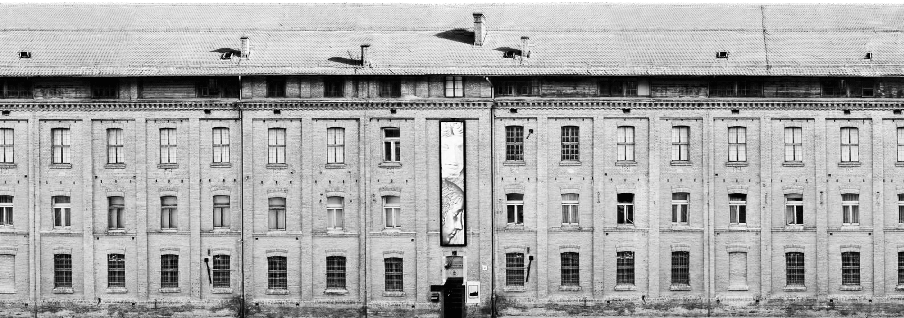

UNESCO spomenici u Gliptoteci HAZU

O izložbi
Virtualnom izložbom objedinjeni su UNESCO spomenici s Popisa svjetske kulturne baštine čiji su sadreni odljevi izloženi u stalnim postavima Gliptoteke Hrvatske akademije znanosti i umjetnosti. Predstavljeni su eksponati spomenika ili njihovi dijelovi iz povijesnih cjelina i lokaliteta UNESCO kulturne baštine, koji su dio zbirki sadrenih odljeva Gliptoteke (Zbirke sadrenih odljeva fragmenata hrvatske kulturne baštine od 9. do 15. stoljeća, Zbirke sadrenih odljeva stećaka i Zbirke Jurja Matejeva Dalmatinca). Kroz pojedine spomenike predstavljeno je pet od ukupno osam cjelina kulturne baštine s UNESCO Popisa.
Ovom izložbom želimo popularizirati stalne postave Gliptoteke kroz tematiku UNESCO baštine. Želi se naglasiti vrijednost zbirki odljeva kojima se na jedinstven način objedinjuju najznačajniji spomenici kiparske baštine uvršteni na UNESCO-ov Popis.
Izložba je priređena povodom Međunarodnog dana muzeja 2019. godine i realizirana je u suradnji Gliptoteke HAZU s Hrvatskim studijima i Grafičkim fakultetom Sveučilišta u Zagrebu.
UNESCO i Hrvatska
UNESCO (United Nations Educational, Scientific and Cultural Organization) specijalizirana je agencija UN-a za intelektualna i etička pitanja na području obrazovanja, znanosti i kulture, osnovana 1945. godine. Programsko područje kulture odnosi se na očuvanje materijalne (kulturne i prirodne) baštine te podvodne i nematerijalne baštine.
UNESCO Popis svjetske baštine sadrži ukupno 1092 spomenika u 167 država. Preduvjet za upis lokaliteta na UNESCO Popis svjetske baštine jest jedinstvena univerzalna vrijednosti kulturnoga dobra te ispunjavanje barem jednog od deset kriterija za upis. Kriteriji su opisani u “Operativnim smjernicama za provedbu Konvencije o svjetskoj baštini” koje su vodeći instrument za upravljanje svjetskom baštinom. Uvrštenjem kulturnih dobara na Popis svjetske baštine ukazuje se na značaj koji baština ima za identitet pojedinog naroda i kulture, ali i za čovječanstvo u cjelini.
HRVATSKA na UNESCO Popisu svjetske baštine ima upisana dobra prema sljedećim kategorijama:
- Kulturna baština (8):
- Povijesni kompleks Splita i Dioklecijanova palača, 1979., Gradska jezgra Dubrovnika, 1979., Gradska jezgra Trogira, 1997., Eufrazijeva bazilika, 1997., Šibenska katedrala, 2000., Starogradsko polje na Hvaru, 2008., Stećci, 2016., Mletačke utvrde od 15. do 17. stoljeća: Stato da Terra i zapadni Stato da Mar u Šibeniku i Zadru, 2017.
- Prirodna baština (2):
- Nacionalni park Plitvička jezera, 1979., Bukove prašume u Karpatima i drugim područjima Europe, 2017.
- Nematerijalna svjetska baština u Hrvatskoj (16):
- Zvončari Kastavštine; Hrvatsko čipkarstvo; Procesija kraljica (Ljelje) u Gorjanima; Hvarska procesija križa; Festa Svetog Vlaha u Dubrovniku; Proizvodnja drvenih dječjih igračaka Hrvatskog zagorja; Istarsko dvoglasno pjevanje i sviranje na istarskoj ljestvici, 2009., Sinjska alka; Ojkanje - upisano pod nematerijalnu kulturnu baštinu s potrebom za hitnom zaštitom; Tradicija pravljenja licitara, 2010., Bećarac; Nijemo kolo, plesno kolo Zagore, 2011., Klapsko pjevanje, 2012., Mediteranska prehrana, 2013., Suhozid; Međimurska popevka, 2018.
Međunarodna suradnja Republike Hrvatske s UNESCO-om ostvarena je kroz nadležnost Hrvatskog povjerenstva za UNESCO čiji se rad odvija kroz Službu za UNESCO pri Ministarstvu kulture Republike Hrvatske.
Ova virtualna izložba obuhvaća pet od osam cjelina kulturne baštine koje se nalaze u stalnim postavima Gliptoteke HAZU s područja Hrvatske: Povijesni kompleks Splita i Dioklecijanova palača, Gradska jezgra Dubrovnika, Gradska jezgra Trogira, Šibenska katedrala, stećci te lokalitet (Radimlja) iz Bosne i Hercegovine.